What it does
Importing Mixamo animations into Godot is tedious. You have to open Advanced Import Settings for every animation file, create a BoneMap, assign SkeletonProfileHumanoid, configure retarget settings, reimport, then manually build an AnimationLibrary and add each animation to your model's AnimationPlayer.
MixaBridge does all of that in three clicks. Select your model, link your AnimationPlayer, add your animation files, hit Process. Done.
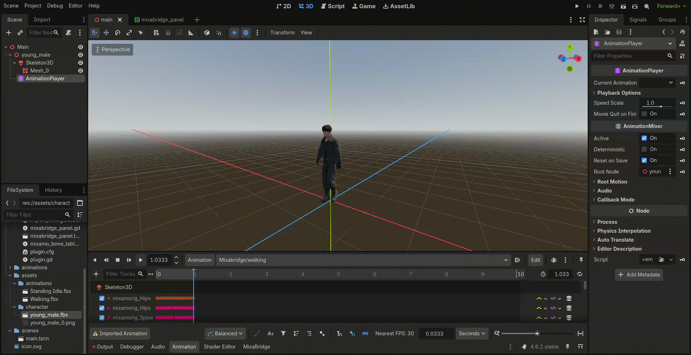
Why this exists
The manual Mixamo-to-Godot import workflow goes like this:
1. Open your model's Advanced Import Settings
2. Find the Skeleton3D, create a BoneMap, set profile to SkeletonProfileHumanoid
3. Map the bones manually (or auto-map and cross your fingers)
4. Save the BoneMap as a .tres
5. For every single animation file: open its Advanced Import Settings, assign the BoneMap, configure retarget, save
6. Wait for reimport
7. Open AnimationPlayer, create a new AnimationLibrary
8. Manually add each extracted .res animation
For 5 animations, that's annoying. For 50+, that's an entire afternoon of clicking through import dialogs. And if you change your model or re-export from Mixamo, you get to do it all over again.
MixaBridge replaces steps 1 through 8 with: select model, link AnimationPlayer, add animation files, click Process.
Prerequisites
| Requirement | Details |
|---|---|
| Godot | 4.4 or later |
| Model | Rigged character from Mixamo (.fbx) |
| Animations | Mixamo animations exported without skin (.fbx) |
Install
From the Godot Asset Library (recommended):
1. In the Godot editor, open AssetLib (top center tab)
2. Search for MixaBridge
3. Click Download, then Install
Manual:
Copy the addons/mixabridge/ folder into your Godot project's addons/
directory.
Then enable the plugin:
Project > Project Settings > Plugins > MixaBridge > EnableThe MixaBridge tab appears in the bottom panel next to Output, Debugger, and Animation.
Mixamo prep
Before using MixaBridge, you need your model rigged and your animations downloaded from Mixamo. Here's how.
Go to mixamo.com, upload your character model, and map the bones when prompted (chin, wrists, elbows, knees, groin). Select Standard Skeleton when asked for skeleton type.
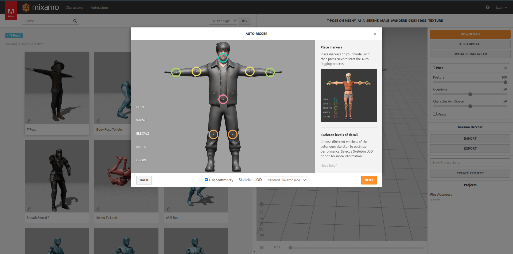
After rigging is complete, hit the orange Download button. Don't select any animation from the left panel first — just download the model as-is with the skeleton.
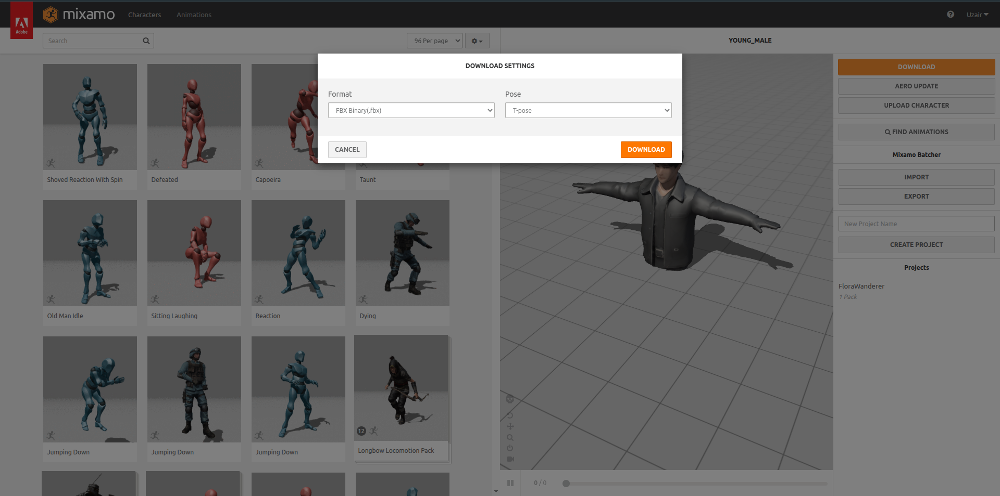
Now pick animations from the left panel. For each one, check "In Place" if it's a looping movement animation (walk, run). Then hit Download and select "Without Skin" — this gives you the animation data only, no mesh.
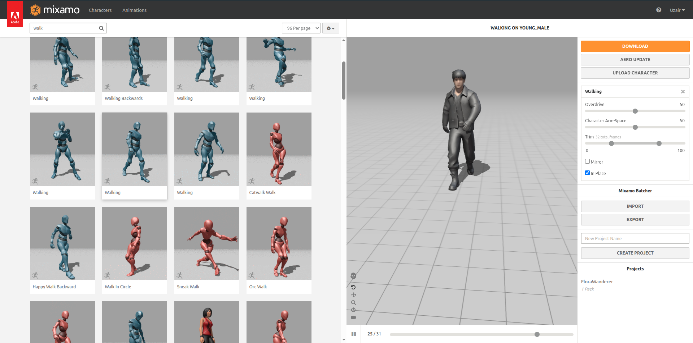
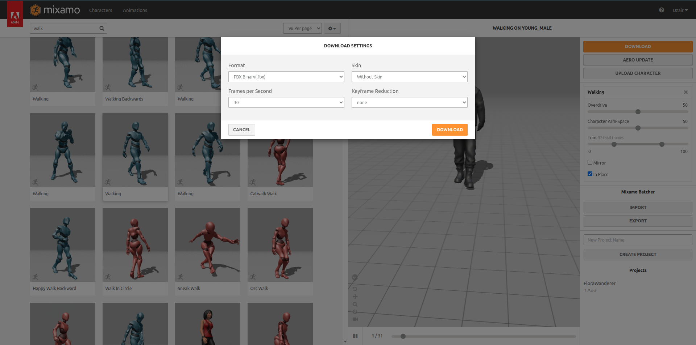
Drop the model .fbx and all animation .fbx files into your Godot
project directory (e.g., res://assets/). Godot will auto-import them.
Usage guide
Drag the model .fbx from the FileSystem dock into your scene. Right-click it and
select Make Local so its nodes are editable.
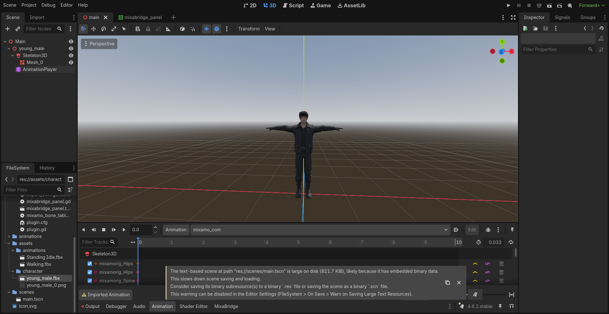
Click the MixaBridge tab in the bottom panel.
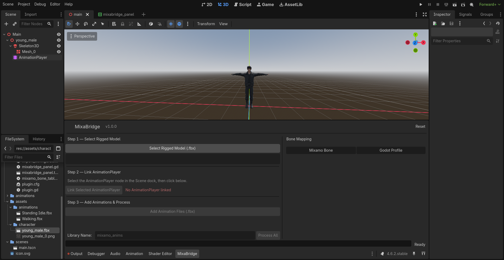
Click "Select Rigged Model (.fbx)" and pick your model file. MixaBridge will analyze the skeleton, auto-map all Mixamo bones to Godot's humanoid profile, configure the import settings, and reimport the model. You'll see the bone mapping results in the right panel.
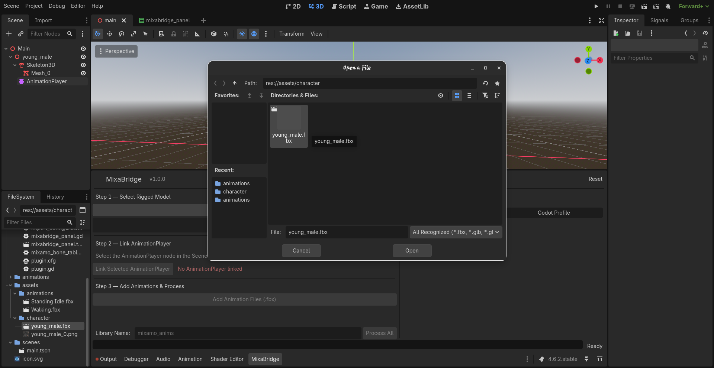
In the Scene dock (left side), click your model's AnimationPlayer node to select it. Then click "Link Selected AnimationPlayer" in MixaBridge. The status turns green when linked.
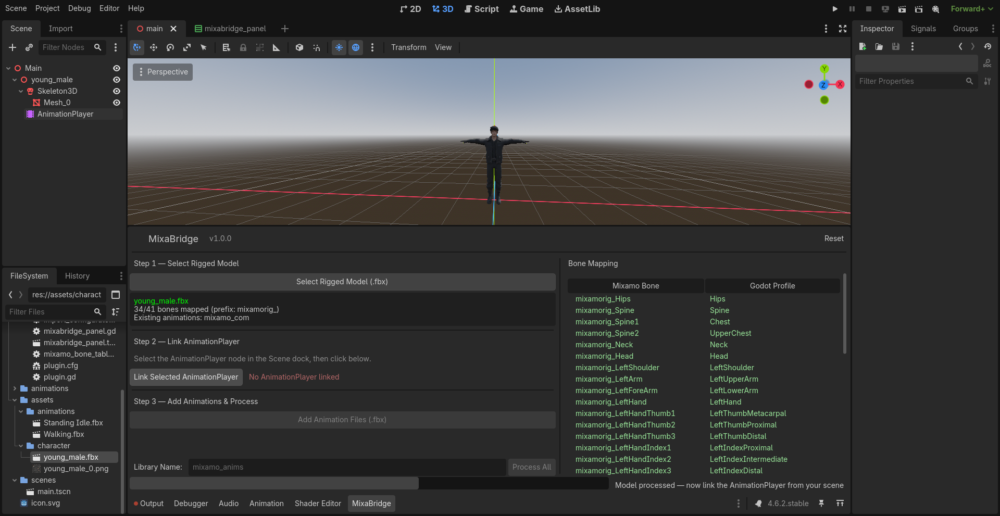
Click "Add Animation Files (.fbx)" and select all your animation
.fbx files. They'll appear in the file list.
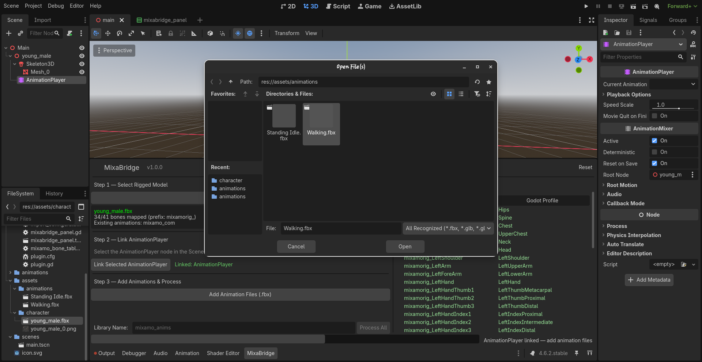
Check the Loop box to instantly make an animation loop. Check the Remove Root box to strip the translation track from the root bone, forcing the animation to play in-place. If modifying an existing animation, these changes are saved instantly without needing to process.
Rename: Double-click any animation in the list to change its name before processing. The name you set here is the final animation name in your library.
Remove: Select an animation and click "Remove Selected" to drop it from the queue.
If your AnimationPlayer already has libraries, MixaBridge shows a dropdown to pick one — new animations get added to it. Or select "Create New Library" and type a name.
Hit "Process All". MixaBridge configures every animation file's import settings, reimports them with the BoneMap, extracts the animations, and attaches the library directly to your AnimationPlayer.
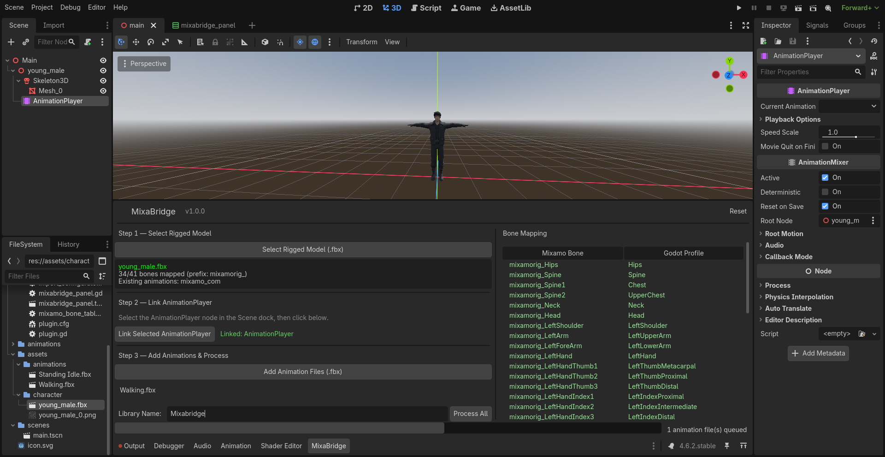
Click the AnimationPlayer in the Scene dock. In the Animation panel at the bottom, you'll see your library and all imported animations. Select one and hit play.
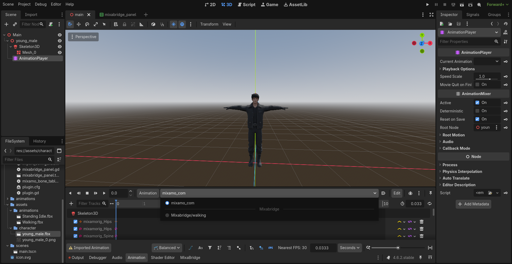
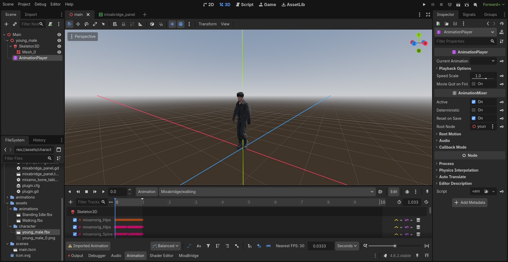
.tres file in
res://animations/ so you can reuse it across scenes.
Full walkthrough — from dragging the model to playing animations. Under 35 seconds.
Addon structure
addons/mixabridge/
plugin.cfg config
plugin.gd entry point
icon.svg addon icon
mixamo_bone_table.gd Mixamo-to-Humanoid bone name map
bone_mapper.gd skeleton analysis + BoneMap creation
import_configurator.gd .import file manipulation + reimport
animation_extractor.gd animation extraction + library building
mixabridge_panel.tscn bottom panel UI layout
mixabridge_panel.gd panel controller + workflow orchestration
generated/ auto-generated BoneMap .tres files
docs/ this documentationHow it works
MixaBridge doesn't use any custom import plugins or editor hacks. It works with Godot's existing import pipeline:
1. It loads your model's .fbx as a PackedScene, finds the Skeleton3D node, and reads the
bone names.
2. It matches each mixamorig:-prefixed bone to Godot's
SkeletonProfileHumanoid names using a static lookup table (e.g.,
mixamorig:LeftForeArm maps to LeftLowerArm).
3. It creates a BoneMap resource and saves it as .tres.
4. It edits each file's .import file (which is a standard ConfigFile) to
inject the BoneMap path and retarget settings under [params].
5. It calls EditorFileSystem.reimport_files() to trigger Godot's import pipeline with
the new settings.
6. After reimport, it loads each animation scene, extracts the Animation resources from their AnimationPlayers, and assembles them into a single AnimationLibrary attached to your target AnimationPlayer.
Limitations
| Limitation | Details |
|---|---|
| Mixamo rigs only | The bone name table is built for Mixamo's naming convention (mixamorig:
prefix). Other naming schemes won't auto-map. |
| Godot 4.4+ | Uses APIs that may not exist in earlier versions. |
| FBX/GLB/GLTF only | Other 3D formats aren't tested. |
.import file editing |
MixaBridge writes to .import files directly. If Godot's import format changes
in future versions, this may break. |
| Blocking reimport | reimport_files() blocks the editor. Large batches (50+ animations) may freeze
the editor momentarily. |
License
MIT License. Use it however you want.
Disclaimer
MixaBridge is an independent, community-built tool. It is not affiliated with, endorsed by, or sponsored by Adobe Inc. or Mixamo. "Mixamo" is a trademark of Adobe Inc. This project interacts with files exported from Mixamo but has no connection to Adobe or its services.